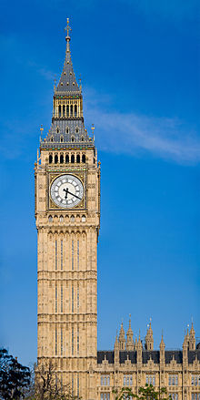

Big Ben is the nickname for the Great Bell of the clock at the north end of the Palace of Westminster in London,[1] and often extended to refer to the clock and the clock tower.[2] The tower is officially known as Elizabeth Tower, renamed to celebrate the Diamond Jubilee of Elizabeth II in 2012; previously it was known simply as the Clock Tower. The tower holds the second largest four-faced chiming clock in the world (after Minneapolis City Hall).[3] The tower was completed in 1858 and had its 150th anniversary on 31 May 2009,[4] during which celebratory events took place.[5][6] The tower has become one of the most prominent symbols of the United Kingdom and is often in the establishing shot of films set in London.